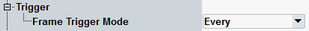

Trigger Signal Settings
The following parameters configure trigger signals provided by the "GSM Signaling" application. For an overview of all supported trigger signals, see "Trigger Signals".

Trigger parameters
Configures the frame trigger signal. It can be generated for each uplink frame, including or not including idle frames (single frame trigger) or for each 26th, 52nd or 104th uplink frame (multiframe trigger).
Remote command: